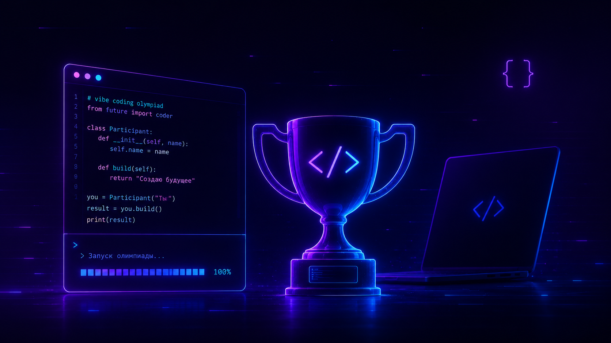
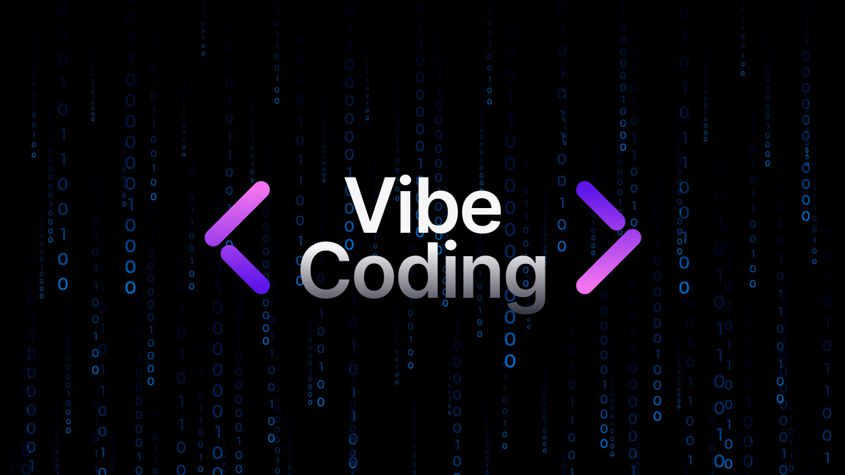

Лендинги
Сайты, которые не просто «есть», а собирают внимание, держат ритм и ведут человека по смыслу.
Vibe Coder / Portfolio / Web & AI Experiences
Не просто «что-то сверстать», а собрать ощущение, стиль, логику и подачу так, чтобы проект хотелось открыть, листать и запомнить.
01 — Обо мне
Я работаю на стыке кода, визуала, UX и AI-инструментов. Для меня сайт — это не набор блоков. Это ощущение от проекта, ритм, подача, структура и то, как человек чувствует себя внутри интерфейса.
Мой подход — сделать быстро, красиво и не бездумно. Чтобы проект не выглядел как очередной шаблон, собранный без вкуса и идеи.
02 — Навыки
Сайты, которые не просто «есть», а собирают внимание, держат ритм и ведут человека по смыслу.
Страницы, которые показывают не только работы, но и стиль, характер и уровень.
Когда нужен не просто сайт, а ощущение: атмосфера, характер, настроение, подача.
Использую нейросети как инструмент ускорения и усиления идей, а не как замену мышлению.
Продумываю, как человек читает, куда смотрит, где теряется и где принимает решение.
Могу собрать сильную первую версию быстро, без месяцев бесконечных согласований.
03 — Метод
01
Я смотрю не только на задачу, но и на ощущение, которое должен передавать проект.
02
Красивый сайт без логики — это просто красивая обёртка. Поэтому я собираю смысл, сценарий и путь пользователя.
03
Когда есть стиль и логика, проект собирается быстрее, точнее и выглядит сильно.
04 — Кейсы
Промо работ в одном ритме: одинаковый кадр, сильный визуал и понятная подача.
Сайты, которые собирают внимание, держат ритм и ведут человека по смыслу.

02Страницы, которые показывают не только работы, но и стиль, характер и уровень.
Когда нужен не просто сайт, а ощущение: атмосфера, характер, настроение, подача.

04Нейросети как инструмент ускорения и усиления идей, а не как замена мышлению.
Продумываю, как человек читает, куда смотрит, где теряется и где принимает решение.
Сильная первая версия быстро, без месяцев бесконечных согласований.
05 — Отзывы
Коротко о том, как ощущается работа: от первого вайба до готовой страницы.

эксперт · личный бренд
Собрали сайт, который наконец-то выглядит как я, а не как шаблон. Быстро, красиво и с характером.

AI-продукт · лендинг
Не просто сверстали — упаковали ощущение продукта. Первый экран сразу цепляет, и люди остаются листать.

креатор · портфолио
Портфолио стало сильнее кейсов: появился стиль, ритм и подача. Хочется пересылать ссылку.
Листай карточки или жми стрелки
06 — Разница
Потому что я умею видеть проект целиком.
Не только
Но и
эстетика + структура + digital-мышление + скорость
07 — Стек
Но если честно — главный инструмент не стек, а вкус, насмотренность и умение собирать цельное впечатление.
08 — Для кого
Хороший сайт — это не когда «нормально сверстано». Это когда у проекта появляется энергия, форма и ощущение, что он живой.
09 — Дальше
Могу помочь с концепцией, структурой, упаковкой и реализацией. От первого вайба до готовой страницы.